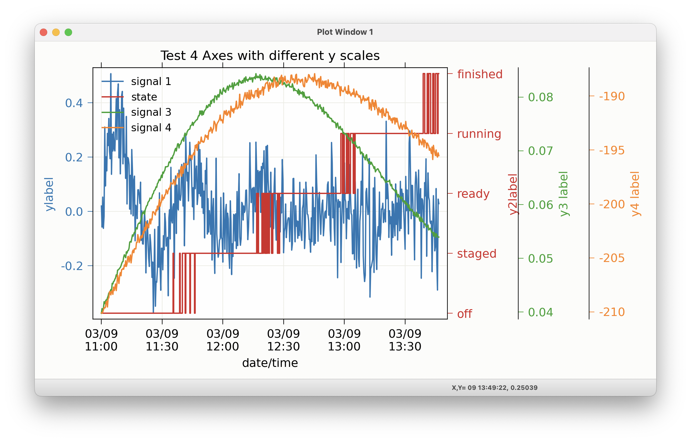

wxmplot Examples¶
The wxmplot Overview showed a few illustrative examples using wxmplot. Here we show a few more examples. These and more are given in the examples directory in the source distribution kit.
Dynamic examples not shown here¶
Several examples that can be found at wxmplot examples are not shown here either because they show many plots or are otherwise more complex. They are worth trying out.
demo.py will show several Line plot examples, including a plot which uses a timer to simulate a dynamic plot, updating the plot as fast as it can - typically 20 to 30 times per second, depending on your machine.
stripchart.py also shows dynamic, time-based plot.
scope_mode_function.py and scope_mode_generator.py both show dynamic plots with data uddated with a user-supplied function that either returns or yields datasets to update plot traces.
theme_compare.py renders the same plot with a selection of different themes.
image_scroll.py shows an updating set of images on a single display. Perhaps surprisingly, this can be faster than updating the line plots.
Scatterplot Example¶
An example scatterplot can be produced with a script like this:
#!/usr/bin/python
#
# scatterplot example, with lassoing and
# a user-level lasso-callback
import sys
import wx
import wxmplot
import numpy
x = numpy.arange(100)/20.0 + numpy.random.random(size=100)
y = numpy.random.random(size=len(x))
def onlasso(data=None, selected=None, mask=None):
print( ':: lasso ', selected)
app = wx.App()
pframe = wxmplot.PlotFrame()
pframe.scatterplot(x, y, title='Scatter Plot', size=15,
xlabel='$ x\, \mathrm{(\AA)}$',
ylabel='$ y\, \mathrm{(\AA^{-1})}$')
pframe.panel.lasso_callback = onlasso
pframe.write_message('WXMPlot PlotFrame example: Try Help->Quick Reference')
pframe.Show()
#
app.MainLoop()
and gives a plot (after having selected by “lasso”ing) that looks like this:

Plotting with errorbars¶
An example plotting with error bars:
#!/usr/bin/python
import numpy as np
import wxmplot.interactive as wi
npts = 41
x = np.linspace(0, 10.0, npts)
y = 0.4 * np.cos(x/2.0) + np.random.normal(scale=0.03, size=npts)
dy = 0.03 * np.ones(npts) + 0.01 * np.sqrt(x)
wi.plot(x, y, dy=dy, linewidth=0, marker='o',
xlabel='x (mm)', ylabel='y', viewpad=10,
title='Plot with error bars')
gives:

Plotting data from a datafile¶
Reading data with numpy.loadtext and plotting:
#!/usr/bin/python
from os import path
import numpy as np
import wxmplot.interactive as wi
fname = 'xafs.dat'
thisdir, _ = path.split(__file__)
dat = np.loadtxt(path.join(thisdir, fname))
x = dat[:, 0]
y = dat[:, 1]
wi.plot(x, y, xlabel='E (eV)', ylabel=r'$\mu(E)$',
label='As K edge', title='Data from %s' % fname)
gives:

Plotting data with discrete values¶
Some data has discrete values, or a set of enumerations. For such data, you can set
#!/usr/bin/python
"""
example setting yticks for categorical data
"""
import numpy as np
import wxmplot.interactive as wi
x = np.arange(100)
y = (x * 0.06).astype(int)
y[84:86] -= 1
y[94:] -= 1
y[67:69] += 1
y[43:45] += 1
display = wi.plot(x, y, xlabel='t (s)', ylabel='Y label', title='discrete y data',
drawstyle='steps-post')
display.panel.set_ytick_labels({0: 'zero', 1: 'one', 2: 'two',
3: 'three', 4: 'four', 5: 'five', 6: 'six'})
display.draw()
gives:
{kind=link}
Using Left and Right Axes¶
An example using both right and left axes with different scales can be created with:
#!/usr/bin/python
#
# example plot with left and right axes with different scales
import numpy as np
import wxmplot.interactive as wi
noise = np.random.normal
n = 201
x = np.linspace(0, 100, n)
y1 = np.sin(x/3.4)/(0.2*x+2) + noise(size=n, scale=0.1)
y2 = 92 + 65*np.cos(x/16.) * np.exp(-x*x/7e3) + noise(size=n, scale=0.3)
wi.plot(x, y1, title='Test 2 Axes with different y scales',
xlabel='x (mm)', ylabel='y1', ymin=-0.75, ymax=0.75)
wi.plot(x, y2, y2label='y2', yaxes=2, ymin=0)
and gives a plot that looks like this:

Using 3 and 4 Y Axes¶
If 2 different scales is not enough, you extend that to 3 or even 4 separate Y Axes with:
#!/usr/bin/python
#
# example plot with 3 different right-hand axes with different y scales
import numpy as np
import wxmplot.interactive as wi
import pytz
noise = np.random.normal
n = 501
x = np.linspace(0, 100, n)
# note: timestamps can be datetime objects or matplotlib dates
# which are floating point days since the 1970 epoch.
# using time.time() values (here, starting 2024-March-9 11AM)
# and defining the timezone
tstamp = (1710000000 + x*100.0)/86400.
tzone = pytz.timezone('US/Eastern')
y1 = np.sin(x/3.4)/(0.2*x+2) + noise(size=n, scale=0.1)
y2 = (x * 0.041 + noise(size=n, scale=0.1)).astype(int)
y3 = 0.04 + 0.07*np.sin(x/46.) * np.exp(-x*x/7e3) + noise(size=n, scale=0.0003)
y4 = -210. + 0.6*x * np.exp(-x*x/7e3) + noise(size=n, scale=0.3)
disp = wi.plot(tstamp, y1, title='Test 4 Axes with different y scales',
show_legend=True, yaxes_tracecolor=True,
use_dates=True, timezone=tzone,
xlabel='date/time', label='signal 1', ylabel='ylabel',
size=(1000, 600))
wi.plot(tstamp, y2, y2label='y2label', label='state', yaxes=2,
use_dates=True, drawstyle='steps-post')
disp.panel.set_ytick_labels({0: 'off', 1: 'staged',
2: 'ready', 3: 'running', 4: 'finished'},
yaxes=2)
wi.plot(tstamp, y3, y3label='y3 label', label='signal 3', use_dates=True, yaxes=3)
wi.plot(tstamp, y4, y4label='y4 label', label='signal 4', use_dates=True, yaxes=4)
(note the use of yaxes_tracecolor=True). This gives a plot like this:
{kind=link}
Plotting with alpha-fill to show area under a curve¶
It is sometimes desirable to fill the area below a curve, typically to 0. Using the alpha value can be especially helpful for this, so that
#!/usr/bin/python
import numpy as np
import wxmplot.interactive as wi
x = np.linspace(0.0, 20.0, 201)
y1 = np.sin(x)/(x+1)
y2 = np.cos(x*1.1)/(x+1)
wi.plot(x, y1, label='thing1', alpha=0.25, fill=True, xlabel='x (mm)')
wi.plot(x, y2, label='thing2', alpha=0.40, fill=True, show_legend=True)
will give:
{kind=link}
Plotting with alpha-fill to show uncertainty¶
Another use of a filled band is to fill between two traces. An important use of this is to show uncertainties in a function, similar to showing errorbars above. If dy and fill=True are both given, then a band between y-dy and y+dy will be filled, as with:
#!/usr/bin/python
import numpy as np
import wxmplot.interactive as wi
x = np.linspace(0.0, 20.0, 201)
y1 = np.sin(x)/(x+1)
dy1 = 0.04 * np.ones(201)
y2 = np.cos(x*1.1)/(x+1)
dy2 = 0.07 * np.ones(201)
wi.plot(x, y1, dy=dy1, label='thing1', alpha=0.25, fill=True, xlabel='x (mm)')
wi.plot(x, y2, dy=dy2, label='thing2', alpha=0.40, fill=True, show_legend=True)
which gives:
{kind=link}
Of course, you can use that to recast showing a band between any two curves by assigning the average of the 2 curves to y and half the difference to dy, and perhaps setting linewidth=0 to suppress showing the mean value.
Using set_data_generator for user-controlled, dynamic plotting¶
There are three examples that use set_data_generator() to specify how to
update a plot from a user-supplied function. As seen in these examples, the
function definied can either return data to update the data, or it can use a
Python geneator to yield the data. In both cases, you first create a plot (it
can be empty), and then set the function for that plot window to call to grab
new data. The plot window will then periodically call the function you supply,
with a time interval (in milliseconds) given by the polltime argument. With
a simple function, it might look like
import numpy as np
from wxmplot.interactive import plot, set_data_generator
npts = 501
x = np.linspace(0, 50, npts)
y = 3.5*np.cos(1.1*(x-1)/(25+x)) + 2.4*np.cos(3.7*(x-11))
z = 4.1*np.cos(1.6*(x-4)/(40+x)) + 1.9*np.cos(3.2*(x-21))
nx = 2
def get_more_data():
global nx
nx += 1
if nx >= npts:
return None
return [(x[:nx], y[:nx]),
(x[:nx], z[:nx])]
# set up initial plot
plot(x[:nx], y[:nx])
# use data generator to run function to retrieve more data
set_data_generator(get_more_data, polltime=25)
print("consuming data from function...")
This will generate a continuously updating plot adding data as it goes:
As a second example, this time using a generator, you might do something like this:
import numpy as np
from wxmplot.interactive import plot, set_data_generator
# generator of datasets
npts = 501
x = np.linspace(0, 50, npts)
datasets = ((np.cos(1.3*x) + np.sin(0.8*(x+nx/7)),
np.cos(1.1*x) - np.sin(0.6*(x+nx/43)))
for nx in range(npts))
def more_data():
"""yield next pair of datasets from data generator"""
while True:
try:
ds = next(datasets)
yield [(x, ds[0]), (x, ds[1])]
except StopIteration:
break
# set up an initial plot
plot(x, np.zeros(len(x)))
# now set data generator and wait
set_data_generator(more_data, polltime=30)
print("consuming data from generator...")
which will generate a plot like this:
Note that your function should return or yield a list of (x, y) pairs.
As a third example, and by way of comparison with the matplotlib example at https://matplotlib.org/stable/gallery/animation/strip_chart.html, a similar result can be generated with the somewhat shorter and less involved code example
# This could be comparable to
# https://matplotlib.org/stable/gallery/animation/strip_chart.html
from random import random
import numpy as np
from wxmplot.interactive import plot, set_data_generator
class Scope:
def __init__(self, nmax=50, dt=0.1):
self.dt = dt
self.nmax = nmax
self.tmax = dt*nmax
self.t = []
self.y = []
def update(self):
n = len(self.y)
if n > self.nmax:
self.t, self.y, n = [0], [0], 1
self.t.append(n*self.dt)
self.y.append(random() if random() < 0.15 else 0)
return [(self.t, self.y)]
scope = Scope(nmax=200, dt=0.05)
plotter = plot([0], [0], xmax=scope.tmax, ymin=-0.05, ymax=1.05, drawstyle='steps-mid')
set_data_generator(scope.update, win=plotter.window)
Unlike with the matplotlib example, which mixes data generation and management
with plotting code, the Scope here only generates the code, and
wxmplot functions handles all the plotting. This code is both shorter and
better designed than the standard matplotlib example.
Displaying and image of a TIFF file¶
Reading a TIFF file and showing the image:
from os import path
from tifffile import imread
import wxmplot.interactive as wi
thisdir, _ = path.split(__file__)
imgdata = imread(path.join(thisdir, 'ceo2.tiff'))
wi.imshow(imgdata, contrast_level=0.1, colormap='coolwarm')
gives:

3-Color Image¶
If the data array has three dimensions, and has a shape of (NY, NX, 3), it is assumed to be a 3 color map, holding Red, Green, and Blue intensities. In this case, the Image Frame will show sliders and min/max controls for each of the three colors.
"""
example showing display of R, G, B maps
"""
import wx
from numpy import exp, random, arange, outer, array
from wxmplot import ImageFrame
def gauss2d(x, y, x0, y0, sx, sy):
return outer( exp( -(((y-y0)/float(sy))**2)/2),
exp( -(((x-x0)/float(sx))**2)/2) )
if __name__ == '__main__':
app = wx.App()
frame = ImageFrame(mode='rgb')
ny, nx = 350, 400
x = arange(nx)
y = arange(ny)
ox = x / 100.0
oy = -1 + y / 200.0
red = 0.02 * random.random(size=nx*ny).reshape(ny, nx)
red = red + (6.0*gauss2d(x, y, 90, 76, 5, 6) +
3.0*gauss2d(x, y, 165, 190, 70, 33) +
2.0*gauss2d(x, y, 180, 100, 12, 6))
green = 0.3 * random.random(size=nx*ny).reshape(ny, nx)
green = green + (5.0*gauss2d(x, y, 173, 98, 4, 9) +
3.2*gauss2d(x, y, 270, 230, 78, 63))
blue = 0.1 * random.random(size=nx*ny).reshape(ny, nx)
blue = blue + (2.9*gauss2d(x, y, 240, 265, 78, 23) +
3.5*gauss2d(x, y, 185, 95, 22, 11) +
7.0*gauss2d(x, y, 220, 310, 40, 133))
dat = array([red, green, blue]).swapaxes(2, 0)
frame.display(dat, x=ox, y=oy,
subtitles={'red':'Red Image', 'green': 'Green Blob', 'blue': 'other'})
frame.Show()
app.MainLoop()
giving a plot that would look like this:

Note that there is also an Image->Toggle Background Color (Black/White) menu selection that can switch the zero intensity color between black and white. The same image with a white background looks like:

This gives a slightly different view of the same data, with results that may be more suitable for printed documents and presentations.